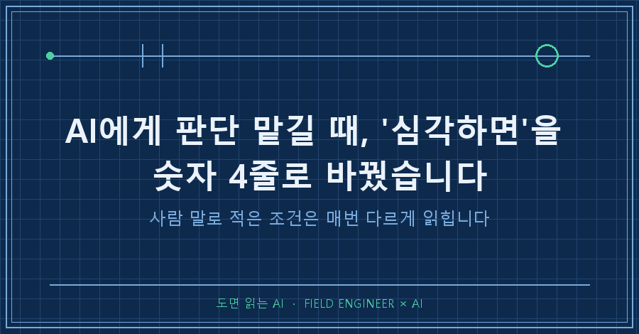
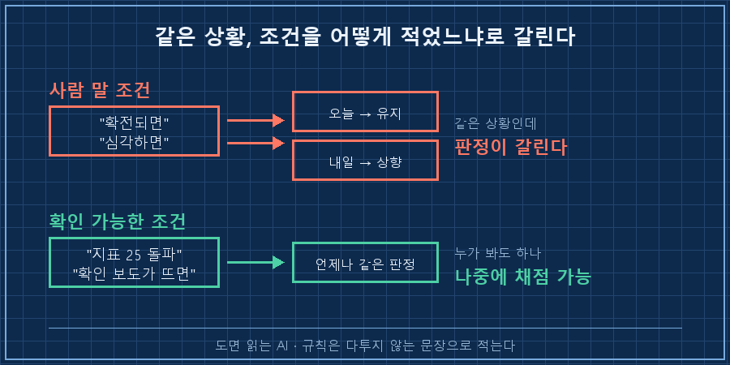
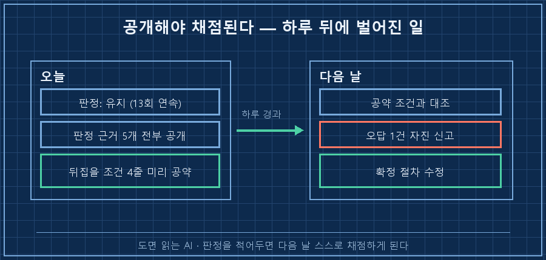
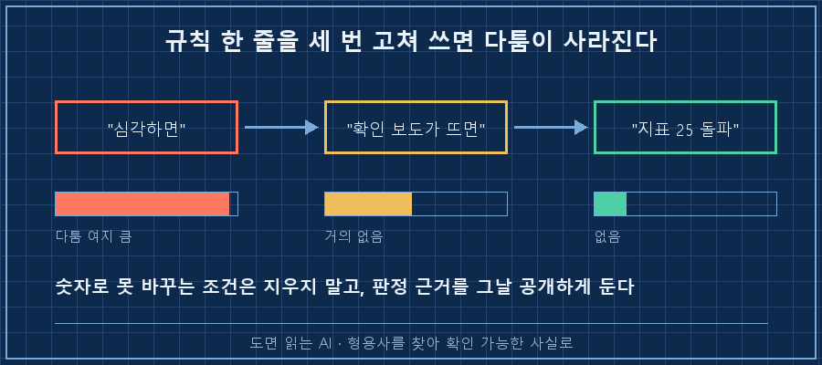

새벽 네 시에 도는 제 자동화가 오늘도 노란불을 띄웠습니다. 열세 번 연속이었어요.
그런데 등급 옆에 처음 보는 줄이 붙어 있었습니다. "단, 사유가 바뀌었습니다."
한 문장으로 먼저 적을게요.
AI에게 판단 맡길 때 진짜 위험한 건 틀린 판단이 아니라, 사람 말로 적어둔 판단 기준입니다. "심각하면", "이상 징후가 보이면" 같은 조건은 오늘 A로 판정하고 내일 같은 상황을 B로 판정해도 아무도 규칙 위반이라 못 합니다. 그래서 저는 그날 판정을 손대는 대신, 무엇이 확인되면 이 판정을 뒤집을지를 네 줄로 미리 적어뒀어요. 판정보다 그 네 줄이 오래갑니다.
2026년 9월 기준이고요. 개인적으로 굴리는 자동화 얘기지 특정 분야 조언은 아닙니다. 매일 정해진 시각에 AI가 상황을 훑고 등급이나 상태를 내주는 구조라면 주제를 안 가리고 같은 문제가 생깁니다.
제조 현장에서 제어 일을 십오 년 했습니다. 설비가 왜 그렇게 판정했는지 뜯어보고, 판정 기준을 문서에 못 박는 게 업무의 절반이에요. 그래놓고 정작 제 개인 자동화 규칙에는 사람 말로 된 조건을 몇 달째 그냥 뒀습니다..
1. 규칙에 "확전되면"이라고 써놨더니 생긴 일
이 자동화에는 상황 위험도를 초록·노랑·빨강으로 매기는 칸이 있습니다. 빨강으로 올리는 조건 목록도 규칙 파일에 적혀 있고요. 그중 한 줄이 이랬어요. 「전쟁 확전」.
그날 바깥에서 실제로 그 비슷한 일이 벌어졌습니다. 그런데 AI는 노랑을 유지했어요. 대신 리포트에 이런 문단을 스스로 붙여놨습니다.
규칙상 등급 상향 조건에는 「전쟁 확전」이라는 항목이 있습니다.
오늘 벌어진 일은 상식적으로 '확전'이 맞습니다.
그런데도 제가 유지 판정을 낸 이유를 그대로 적습니다.
나중에 저를 채점할 수 있어야 하기 때문입니다.근거는 숫자로 붙어 있었습니다. 상향 조건에 걸린 지표 다섯 개가 전부 기준에 크게 못 미쳤다는 거였어요.
사상 최고가 대비 -1.57% / 당일 지수 -0.46% / 변동성지수 15.18
장기 국채금리 +3~4bp / 환율 -0.28%
→ 다섯 개 전부 상향 기준에 크게 미달여기서 제가 서늘했던 건 판정이 아니라 판정의 근거였습니다.
숫자 다섯 개는 전부 검증 가능한데, 정작 규칙에 적힌 조건은 「전쟁 확전」이라는 사람 말이었어요. 이 말은 오늘 "아니다"로 읽어도 되고 내일 "맞다"로 읽어도 됩니다. 그럼 그건 규칙이 아니라 그날의 기분이죠.
현장에서 이런 걸 여러 번 봤습니다. 판정 기준에 "이상 소음 발생 시"라고 적어두면, 같은 소리를 듣고 A조는 정지시키고 B조는 그냥 넘어갑니다. 사람이 대충이어서가 아니라 기준이 사람 말이라서 그래요. 그걸 고치라고 남한테는 그렇게 말해놓고 제 규칙 파일은 몇 달을 그대로 뒀네요..

2. 판정을 뒤집을 조건을 먼저 네 줄로 못 박았습니다
그래서 그날 한 조치는 판정을 바꾸는 게 아니었습니다. 반대쪽이었어요.
"앞으로 무엇이 확인되면 이 판정을 즉시 뒤집는다"를 미리 적는 것. 리포트에 이렇게 박혔습니다.
아래 중 하나라도 확인되면 그날 즉시 등급을 올린다
1. 해협 봉쇄가 '준비 정황'이 아니라 확인 보도로 뜰 때
2. 유가가 $102 돌파 (지난 한 달 상단 $102, 오늘 $90.6)
3. 변동성지수 25 돌파 (상향 기준 30보다 한 단계 먼저 경보, 오늘 15.18)
4. 제3국 정규군 참전 또는 대규모 기반시설 타격이걸 쓴 이유도 AI가 같은 페이지에 적어놨는데, 저는 이 문장을 그날의 수확으로 칩니다.
'전쟁 확전'처럼 사람 판단이 들어가는 조건은
숫자로 바꿔야 다음에 제가 흔들리지 않습니다.미래를 맞히려고 쓰는 게 아니에요. 다음에 비슷한 상황이 오면 제가(그리고 제 AI가) 그때 기분대로 정할 걸 아니까, 지금 손을 미리 묶어두는 겁니다.
그리고 저 네 줄이 전부 숫자는 아니라는 게 오히려 정직한 부분이라고 봐요. 2번과 3번은 숫자지만 1번과 4번은 여전히 말입니다. 다만 "심각하면"이 아니라 확인 가능한 사실로 바뀌었어요. 봉쇄 확인 보도가 떴는지 안 떴는지는 다투기 어렵거든요. 전부 숫자로 바꾸겠다고 붙들고 있었으면 아마 지금도 규칙 파일을 못 고쳤을 거예요..
| 조건을 적는 방식 | 예 | 나중에 다툴 수 있나 |
|---|---|---|
| 사람 말 (형용사) | "심각하면", "확전되면" | 매번 다툼 |
| 확인 가능한 사실 | "봉쇄 확인 보도가 뜨면" | 거의 안 다툼 |
| 숫자 임계값 | "지표 25 돌파" | 안 다툼 |
여러분이 쓰는 점검 기준은 이 표의 어느 칸에 있나요? 저는 맨 윗칸이었어요.
이런 질문이 나올 것 같아서
Q. 애매할 땐 그냥 무조건 높게 잡으면 안전하지 않나요?
제 규칙에도 "확인 불가 시 한 단계 높게"라는 조항이 실제로 있습니다. 그런데 그건 숫자를 못 구했을 때 쓰는 조항이에요. 그날은 숫자 다섯 개가 전부 확인됐고 전부 미달이었습니다. 그럴 때도 높이면 경보가 상시 켜지고, 상시 켜진 경보는 아무도 안 봅니다. 저는 그걸 현장에서 질리게 봤어요.
Q. 뒤집을 조건을 미리 정하면 AI가 그 숫자만 보고 게을러지지 않나요?
그 걱정 때문에 사전 공약은 "올리는 조건"만 적고 "내리는 조건"은 안 적었습니다. 그리고 조건에 안 걸려도 판정 근거를 매일 문서에 공개하게 뒀어요. 판정이 자동이 되는 게 아니라 채점이 가능해지는 겁니다. 이 차이가 생각보다 큽니다.
3. 하루 만에 시험을 봤고, 오답도 하나 나왔어요
재밌는 건 그다음입니다. 이 자동화는 전날에도 규칙을 하나 굳혔거든요. "실행 시점은 달력이 정한다. 확률 지표를 근거로 미루지 않는다."
그리고 바로 다음 날, 같은 사안을 두고 서로 다른 소스가 이런 숫자를 내놨습니다.
같은 날 · 같은 회의 · 같은 사건
소스 A 56% 소스 B 58% 소스 C 62%전날엔 같은 사안에 31%p까지 갈렸던 게 이날은 6%p로 좁혀졌어요. 폭은 줄었는데 결론은 똑같았습니다. 하나의 참값이 없다는 것. 셋 중 어느 걸 고르느냐에 따라 행동이 달라진다면, 그건 규칙이 아니라 취향이잖아요.
전날 규칙이 없었다면 그날 제 AI는 십중팔구 "상황이 급변했으니 좀 지켜보자"고 했을 겁니다. 규칙이 하루 만에 실전 시험을 받은 셈이에요!
같은 리포트 뒷장에는 이런 줄도 있었습니다.
제가 틀렸다는 걸 먼저 말씀드립니다.
어제 채택한 값은 4.8원 오답이었습니다.
확정 방법을 바꿉니다 — 어느 표에 실렸느냐가 아니라
다음 날 등락폭으로 역산되느냐로 확정합니다.AI가 자기 오답을 먼저 신고하고 확정 절차를 바꾼 겁니다. 저는 이 줄을 보고 사전 공약이 값을 하는구나 싶었어요. 판정을 공개해두면 다음 날 자기 손으로 채점하게 되거든요.

오늘 바로 해볼 수 있는 세 줄
제 규칙 파일 손볼 때 이 순서로 했어요. 십 분이면 됩니다.
1. 규칙에서 형용사로 된 조건을 찾아 형광펜 (심각한, 급격한, 이상한, 과도한)
2. 각 조건을 "무엇이 확인되면"으로 바꿔 쓰기 — 숫자로 안 되면 확인 가능한 사실로라도
3. 끝내 못 바꾸는 조건은 남겨두되, 판정 근거를 그날 문서에 공개하게 만들기
3번이 핵심입니다. 못 바꾼 조건을 없애는 게 아니라, 못 바꿨다는 걸 드러내 두는 거예요.

AI한테 판단을 맡기는 게 무섭다는 분들을 자주 만나요. 그런데 제가 그날 배운 건 좀 달랐습니다. 무서운 건 AI가 판단하는 게 아니라, 판단 기준이 사람 말로만 적혀 있어서 누가 채점할 수도 없는 상태였어요. 기준을 숫자로 바꾼 뒤에야 저는 그 판정이 맞았는지 틀렸는지 나중에 따질 수 있게 됐습니다.
규칙 파일 어딘가에 "이상하면 알려줘" 같은 줄이 하나쯤 남아 있을 겁니다. 저도 몇 달을 그냥 뒀으니까요. 거기부터 손대면 돼요.
규칙을 고쳐온 이력은 makefield.ai에 그때그때 열어두고 있습니다.
태그: #AI판단기준 #AI에게판단맡길때 #AI자동화규칙 #AI사전공약 #AI에이전트규칙 #AI판단신뢰 #AI자동리포트 #AI에게일시키기 #AI결과물검수 #자동화규칙설계 #AI활용법 #AI실무활용 #무인자동화 #개인AI에이전트 #도면읽는AI